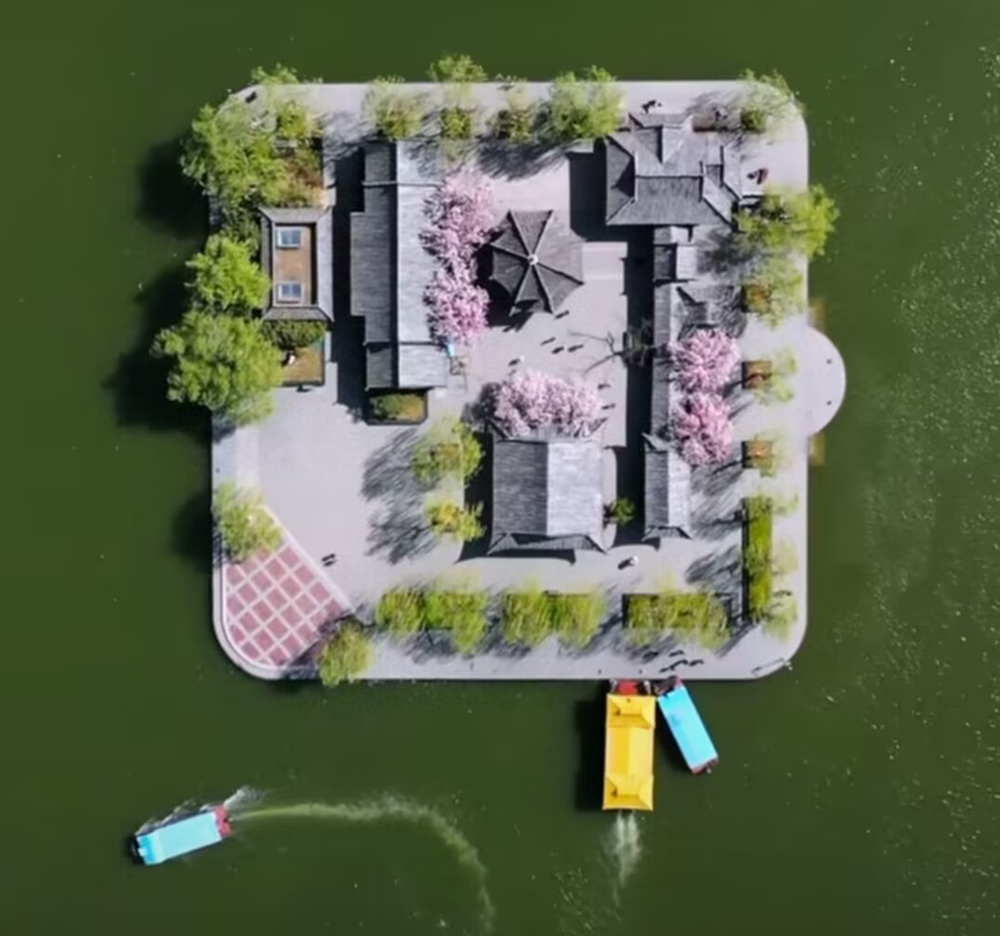
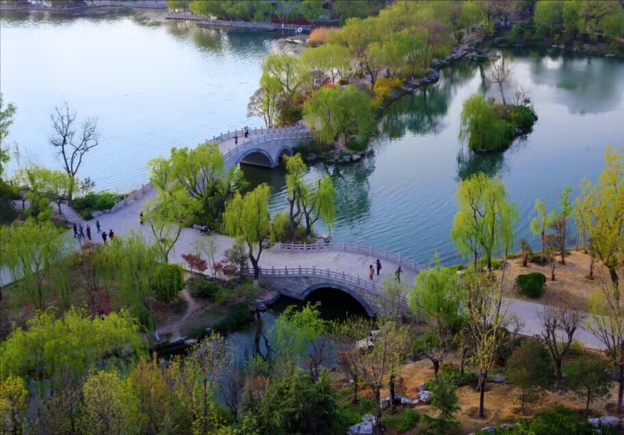
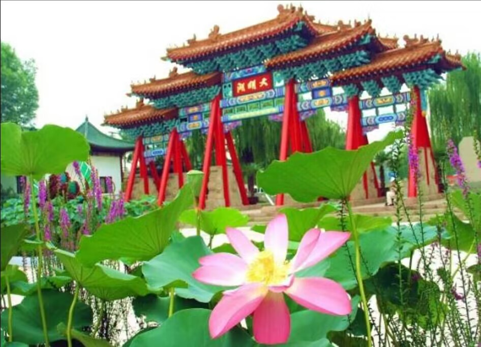

大明湖简介
大明湖位于山东省济南市历下区，是济南三大名胜之一。
大明湖历史悠久，其名始于北魏郦道元《水经注》，书中记载，“泺水北流为大明湖，西即大明寺，东西两面则湖”。宋代称“四望湖”，后渐堙塞。金代起，在元好问的《济南行记》中始称“大明湖”。马可·波罗在《中国游记》中写道：“园林美丽，堪悦心目，湖光山色，应接不暇”。大明湖为诸泉汇流而成，出小清河入渤海，有“淫雨不涨，久旱不涸”的特点。
一湖烟水，绿树蔽空，碧波间菡萏映日，景色佳丽。公园内亭台楼榭，曲径回廊，文人墨迹，错落其间，其中清人刘凤诰“四面荷花三面柳，一城山色半城湖”的对联，尤为人们所称颂。沿湖亭台楼阁，水榭长廊，参差有致。湖南有稼轩祠、遐园、明湖居、秋柳园，湖东北有南丰祠、张公祠、汇波楼、北极阁，湖北有铁公祠、小沧浪，湖中有历下亭、汇泉堂等名胜古迹。
大明湖闻名遐迩，面积约46万平方米，游客众多，每年接待国内外游客约两百万人次，在济南诸公园中最多。大明湖历史悠久，景色秀美，名胜古迹周匝其间。尤其它乃繁华都市之中的天然湖泊，实属难得。
早在北魏年间，郦道元所著《水经注》中便有记载："泺水北流为大明湖，西即大明寺，东、北两面则湖。"其位置在今五龙谭一带，而现今大明湖一带水域则名"历水陂"。它见诸文字已有一千四百多年。六朝时，因湖内多生莲荷，曾名"莲子湖"；唐时它名莲子湖（见段成式《酉阳杂俎》）又名。"历水陂"。宋代时又有"西湖"之称。宋时著名文学家曾巩曾有诗道："问吾何处进炎蒸，十顷西湖照眼明。"可知当时此处已是消暑游憩之地。北宋熙宁五年（公元1072），曾巩任齐州（即今济南）知州时，为防御水患，修建了北水门，引湖水入小清河，并在沿湖修建亭、台、堤、桥，使之渐成游览景观。至金代，诗人元好问在《济南行记》中，始称大明湖。明代重修城墙，大明湖遂初成今日形貌。
大明湖水来源于城内珍珠泉、濯缨泉、王府池等诸泉，有"众泉汇流"乏说，水质清冽，天光云影，游鱼可见。大明湖水源充足，排水便利，故有"恒雨不涨，久旱不涸"的长处，经年水位恒定。水深平均两米左右，最深处约四米，沿湖岸边一米左右."四面荷花三面柳，一城山色半城湖"是大明湖风景的最好写照。
沿湖八百余株垂柳环绕，柔枝垂绿，婀娜点水。湖中现有四十余亩荷池，碧叶田田，白荷红莲，交相辉映，争奇斗艳，荷香飘溢，沁人心脾。波光粼粼的湖面上，时有鱼儿跳波，偶见鸢鸟掠水。碧波之上，画舫穿行，小舟荡波。各处游客云集，指点观赏，欢声笑语，一派繁华景胜，俨若北国江南。若于湖之北岸远眺，南山苍翠，环列似屏，倒映入湖，画图难足。漫游湖畔，处处花繁树茂，点点亭台楼阁掩映绿荫之间，历下亭、铁公祠、北极庙、汇波楼等二十多处名胜景点，令人应接不暇，可谓步移景换，游趣无穷。济南八景中的鹊华烟雨、汇波晚照、佛山倒影、明湖秋月均可在湖上观赏。大明湖以它的秀美风姿赢得古往今来众多人士的咏赞："冬泛冰天，夏挹荷浪，秋容芦雪，春色杨烟，鼓枻其中，如游香国"；"鸥鹭点乎清波，萧鼓助其远，固江北之独胜也。"
大明湖自1958年正式辟建为公园，经过疏浚清淤、修缮扩建，砌筑了湖岸，美化了园容，恢复重建了名胜古迹，增添了茶社饭店、游船和游乐设施，使之旧貌变新颜，姿容胜往昔，成为济南著名风景游览区之一。不仅是休息游览的极好场所，湖内还盛产莲藕湖鱼。公园饭店擅长烹制以湖中鲜鱼、嫩藕、香莲为料的"全鱼宴、冰糖莲子、水晶藕、蒲菜水饺等具"历下风味"的名吃。公园内现还辟建有书画展览馆、碑刻展等文化层次较高的观赏点。整个公园已初步形成集游览观赏、购物娱乐、文化欣赏、饮食服务于一体的多功能旅游区。明湖风姿甲历下，欢颜笑迎八方宾。
超然楼
江北第一楼——超然楼，位于济南大明湖畔。 超然楼是一座拥有几百年历史的名楼，始建于元代。 超然楼建筑面积5673平方米，坐落在宽大的汉白玉基上，顶覆铜瓦，楼高51.7米，上下共分七层，气势非常宏伟，号称"江北第一楼"。超然楼是大明湖扩建改造工程的主要内容，重建后的超然楼，为一钢筋混凝土仿木楼阁式建筑，坐落在宽大的花岗石台基上，主要以展现济南泉城文化，城市园林文化及老济南的民族文化为主。
历下亭
位于湖心岛的历下亭,又名古历亭，始建于北魏时期，有1500多年的历史。上悬清高宗御书“历下亭”匾额。亭前楹联“海右此亭古，济南名士多”是杜甫的诗句。古历下亭在五龙潭一带,宋以后迁至今大明湖南畔，今历下亭建于清康熙年间，历下亭”红底金字匾额由乾隆皇帝手书，御碑亭内立有乾隆皇帝游大明湖诗碑刻,历来为文人会集之地。历下亭四周环绕着名士轩、蔚蓝轩等建筑。

沧浪荷韵
小沧浪亭位于铁公祠院内，建于清乾隆五十七年，仿照苏州沧浪亭的风格。“沧浪”二字，取自《楚辞.渔父》：“沧浪之水清兮，可以濯吾缨；沧浪之水浊兮，可以濯吾足”之典故而得名。其规模比苏州沧浪亭小，故名“小沧浪亭”。每逢盛夏，大明湖小沧浪水池中荷花盛开，清香弥漫，目之所及，碧波绿影，菡萏映日，如绿漪，似彩霞，别致动人，蔚为壮观。
曾堤萦水
位于大明湖北水门南侧，占地19950平米，唐宋八大家之一曾巩在任齐州知州时而建，又称百花堤，堤上杨柳垂荫，鲜花灿烂，两侧湖水萦岸，景色秀美，为明湖新八景之一。
明湖泛舟
今明湖十六景之一。船是大明湖的魂。无论风和日丽，还是烟雨迷蒙，驾一叶小舟，或乘坐古韵悠悠的画舫，荡行于烟波浩淼的湖面，那情那景，令人陶醉其中。丹坊耀日
大明湖南门，耸立着一座民族形式的牌坊，被誉为大明湖的标志。牌坊高8.38米，阔14.7米，立于石砌台阶之上。为五间七踩重昂单檐式，坊顶呈“三阶错落”式，上覆金黄色琉璃瓦，飞檐起脊，造型优美，富丽堂皇。牌坊匾额上有“大明湖”三个鎏金大字，为清代嘉庆年间山东登州人于书佃所书。
牌坊两边各有一条小溪，溪水是珍珠泉、濯缨泉等诸泉水汇流到百花洲，之后注入大明湖。整个建筑在阳光映照下，金碧辉煌，熠熠生辉，于是人们称它为“丹坊耀日”。 